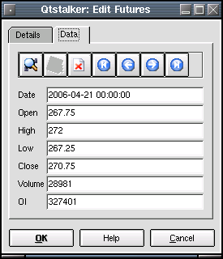

Futures
Description:
This plugin is used for managing futures data. User can edit bar
data
fields. The details tab allows
the user to edit some fundamental data. The data tab allows the user to
edit bar data.
Details Tab:
- Symbol - This is the 'ticker' name.
- Name - This is the contract name.
- Type - This is the type of security ie stock, futures etc.
- Futures Type - This is the exchange commodity code.
- Futures Month - This is the contract expiry month code.
- First Date - The first bar available.
- Last Date - The last bar available.
Data Tab:
Here is where you can edit the bar data. To search for a specific
record use the search dialog and select a date and
time. To edit a field, just select a field and
change the values directly. To save your changes
press the save button. To delete a record press the delete button. To
navigate the records use the start, previous, next and end buttons.
